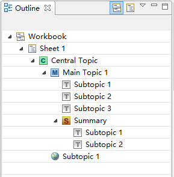
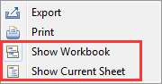
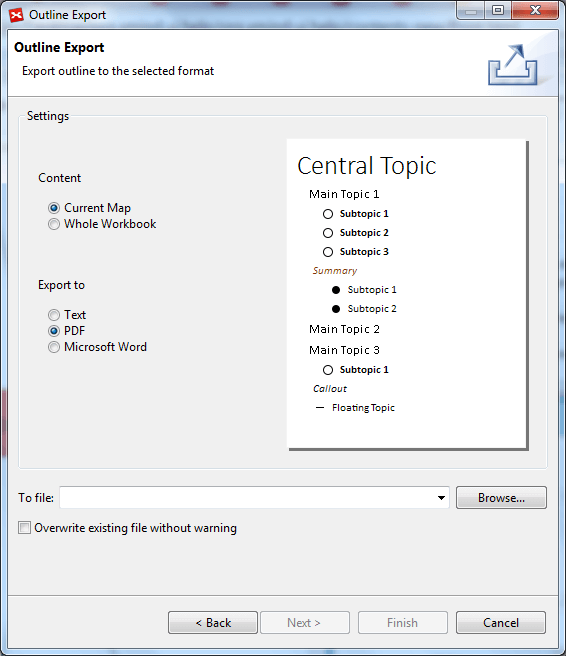
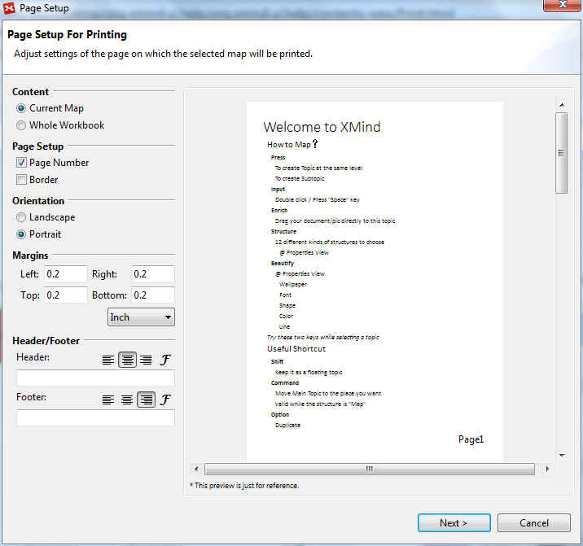

Outline
Outline is a tree-like view in XMind, containing all elements of the current map or wookbook. And you can also modify some of the map's attributes here directly:
- Topic: You can drag and drop a topic from outline view into the XMind editor. That topic will be copied into current map. You can directly double-click a topic in the outline to edit it.
- Hyperlink: You can see the hyperlink URL if a topic use one.

Show Workbook's or Current Map's OutlineFrom the Drop-down Menu, you can decide to show the whole workbook or the current sheet only.
- Show Workbook: Click to show all maps in this workbook.
- Show Current Map: Click to show the current map only.

Export OutlineIn XMind 7, we're able to export map outline to Text/PDF/Microsoft Word format. To export outline:
- Click "Export" from the dropdown menu at the upper right of Outline window.
- In the coming dialog, you can select to export Current Map or Whole Workbook to Text/PDF/Microsoft Work format.
- Choose the location to export to and click Finish.

Print OutlineBesides export, we're also able to print map outline in XMind 7. To print ouline:
- Click "Print" from the dropdown menu at the upper right of Outline window.
- Adjust the print settings in the coming print dialog.
- Click Next to choose the printer.
- Click "Print".
